Objectives
Install JDK 8 + IntelliJ Idea
Preparation
For this lab you need to be reasonably comfortable with the command prompt + explorer - or finder/terminal on a Mac.
We have reviewed these in Lab05a in the Web Development Deployment Topic
Command Prompt
Recall, how you launch the command prompt:

Yoy may already have it pinned to the task bar:

Before going on to the next step, make sure you are comfortable navigating in DOS around the file system, and in particular make sure you can navigate to your web development workspace.

Explorer
Also, keep an eye on your file structure in explorer:
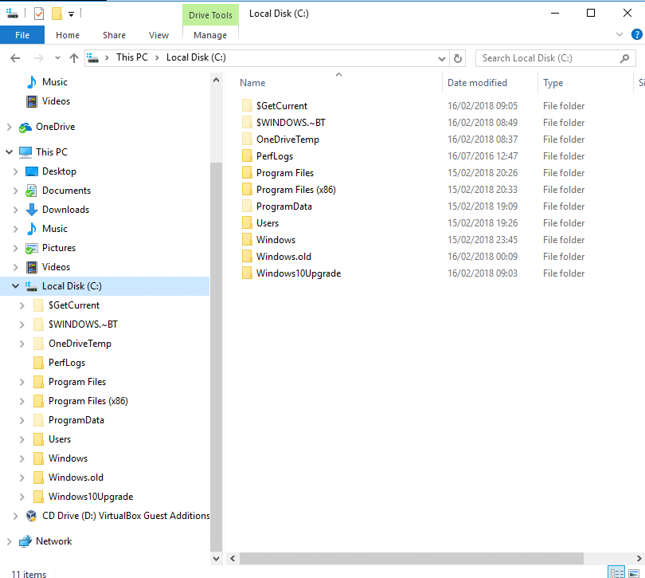
Mac
The equivalents on Mac are the Finder and the Terminal.
Install Java JDK: Windows
Visit this page:
Make sure you install the correct version - which should be Version 8 JDK
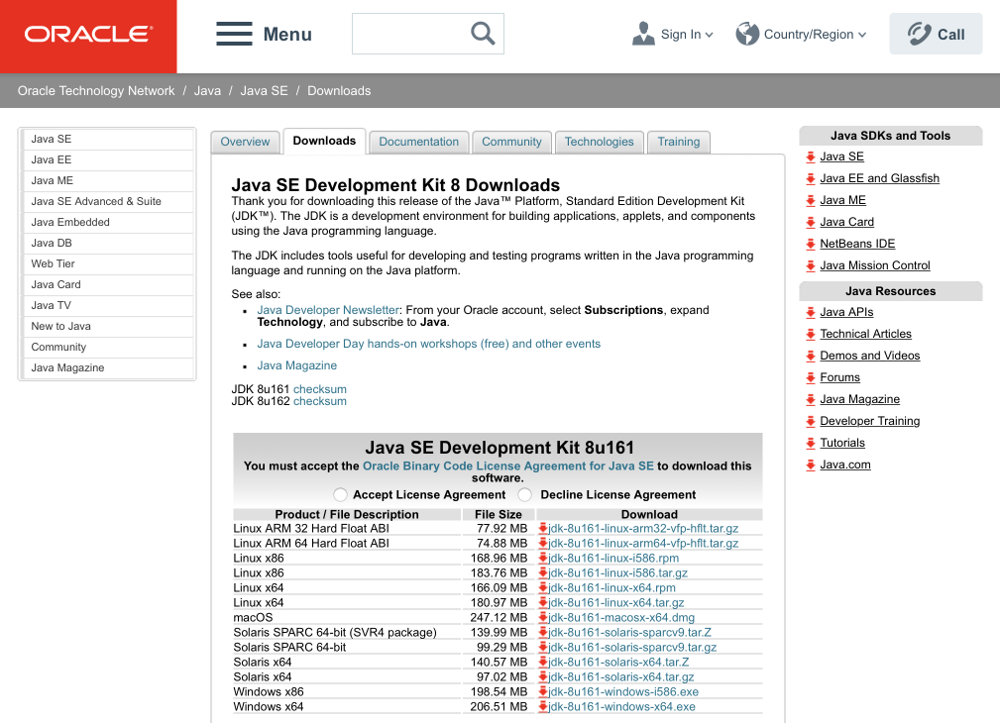
On windows, your download is likely to be for Windows 64:
- jdk08u161-windows-x64.exe
To check if it is installed ok - you should try
java -vYou should get something like this:
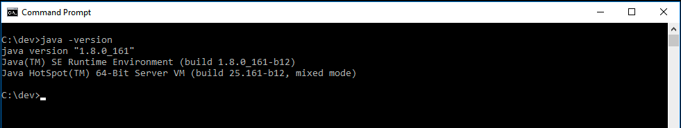
If you are getting 1.9 or perhaps 9.0 reported - then you will need to remove this version. The installed versions can be inspected via windows Settings:
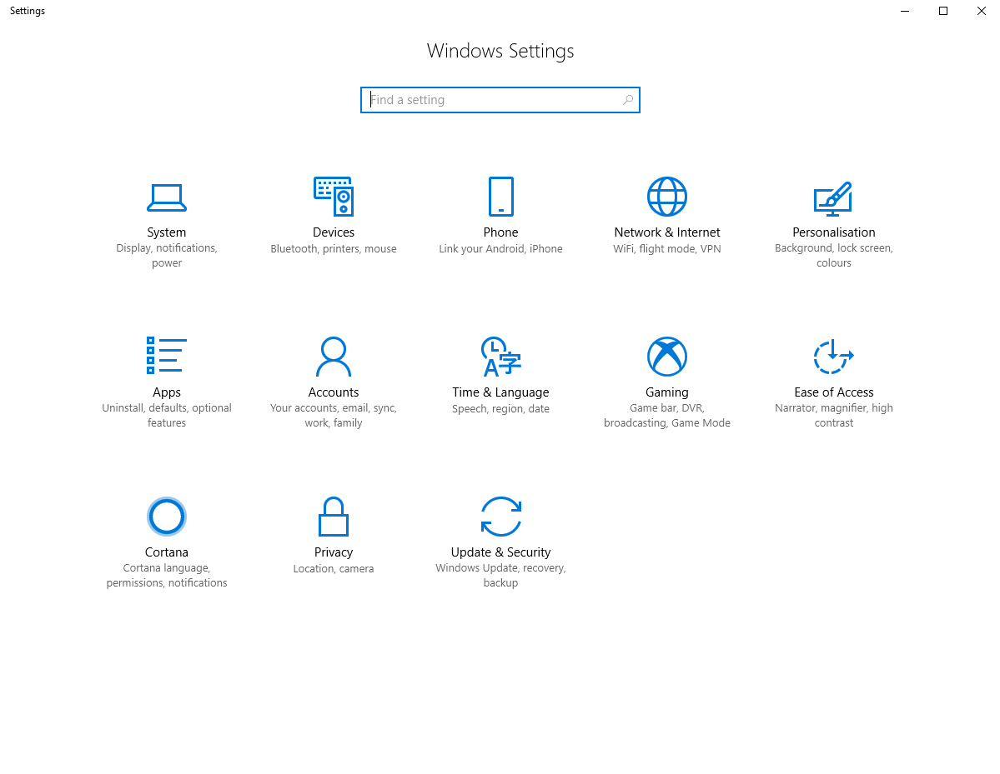
Select Apps above to see something like:

There are multiple version of java installed here. Clicking on any one will allow you to uninstall:
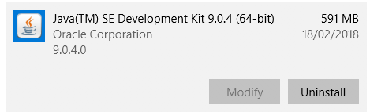
Ideally, these should be the only java versions installed:
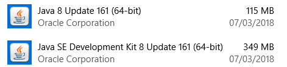
Install Java JDK: Mac
For the mac, the best way to install is to use Brew. These commands should do:
brew update
brew install jenv
brew cask install caskroom/versions/java8Getting the correct java version can be a challenge on mac. If the above commands are executed - and you find that there is still a version 9 of Java installed, try the following:
Locate this directory :
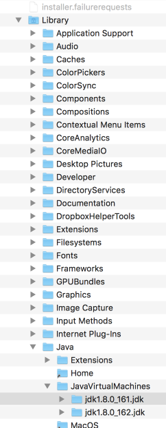
If there is a version 9 (not shown here) then try to manually delete it.
Install IntelliJ Idea
To date we have been using Sublime Text as our primary editor. While we can continue to use it, we will supplement our tool set with a professional Java Integrated Development Environment (IDE) called Idea:
Before downloading, first create a new Jetbrains account:
Make sure to use your WIT email address, as this will allow you to gain access to the professional versions of all Jetbrains products.
Now proceed to download and install the Ultimate version of the Idea IDE:
During installation, make sure the following options are selected during the install:

You have already created your Jetbrains account, so log in with your credentials now:
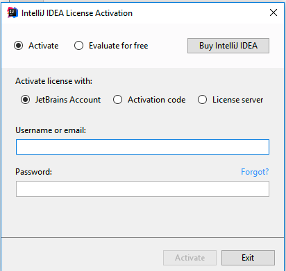
This should activate the application, and you will get to the opening screen:
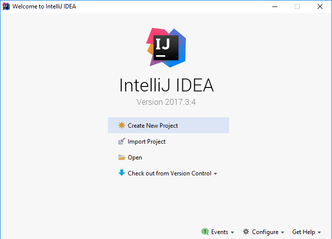
Hello World
To create a project - select Create New Project
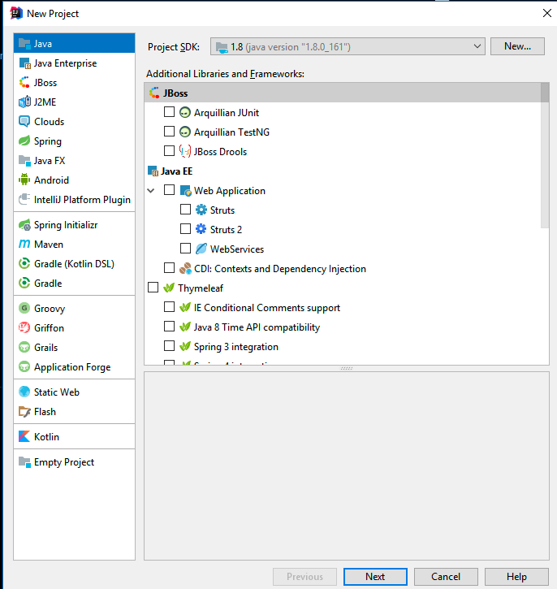
Press next - and the select Java Hello World App
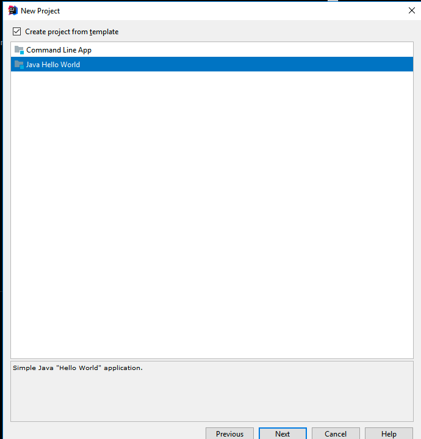
This will allow you to name the and locate the project:
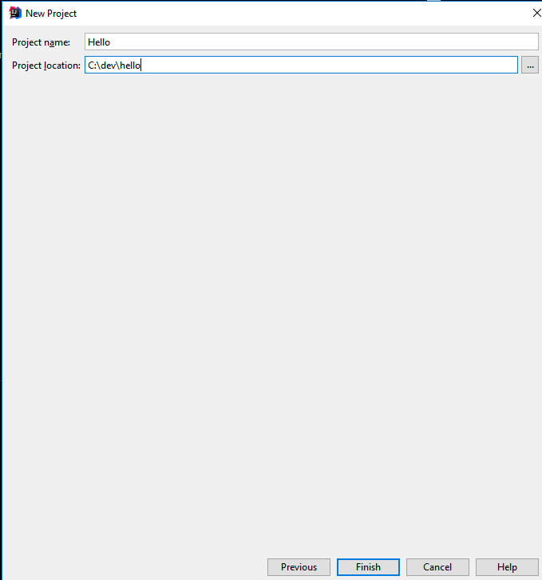
Call the project Hello - and make sure you know where it is located. You may be asked to create the folder:
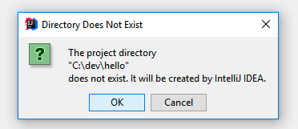
The project should look like this eventually:
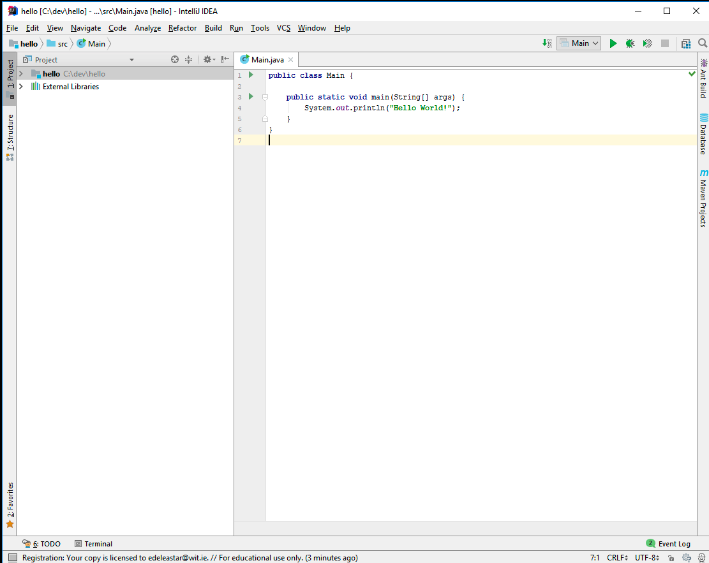
Pressing the green Run button on the top right - and the program should execute:
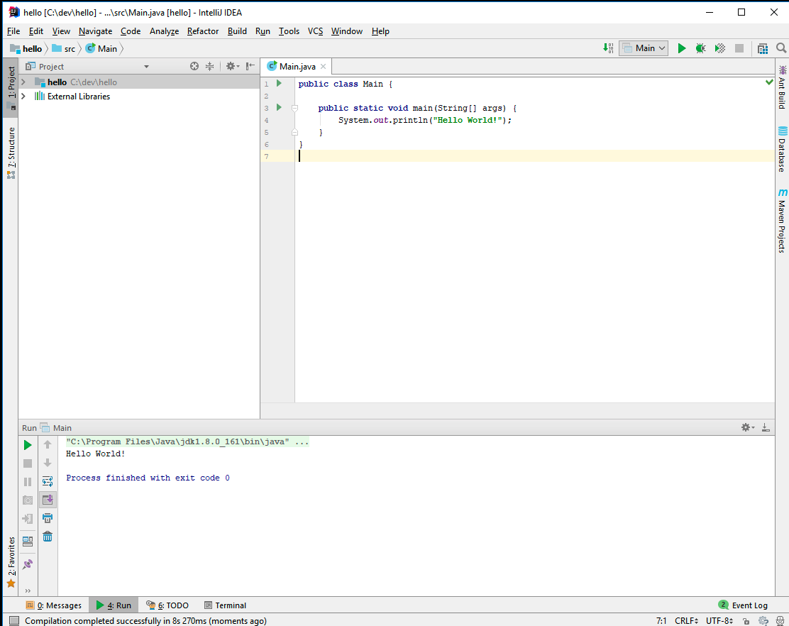
If the IDE doesnt quite display as shown above, experiment with the button on the extreme bottom left:
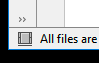
This will toggle some aspects of the display:
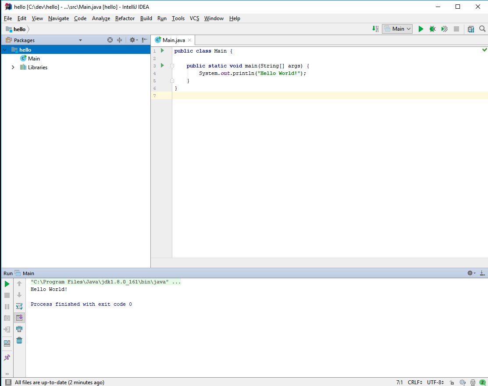
Exploring the Project View
In IntelliJ, take a close look at the project window:
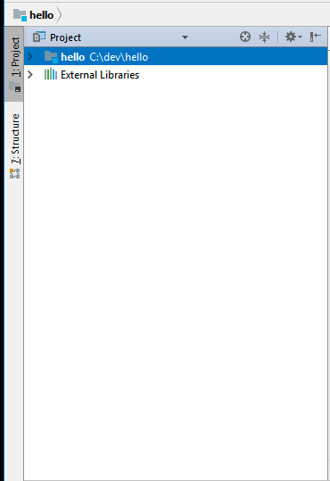
Try to expand the view so that it looks like this:
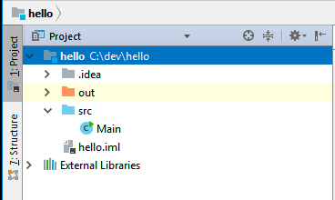
The Main icon above is a representation of the file in editor window on the right.
Now select the Project dropdown - to reveal potential alternative views for this window:

From this - select Packages. This presents a simpler view:
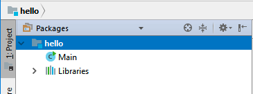
You could regard these two views as:
- Physical: the actual files in the project, included all generated and system files. This view more or less corresponds to the Explorer/Finder view
- Logical: just the files that are significant to the programmer. This hides all non-editable files, and allows you to focus on just the project sources.
In general, you will be happy to work with the Packages (logical) view. As you gain more experience, and the projects become more sophisticated, you may occasionally need to view the Project (physical) view.
Exercises
Exercise 1:
Examine the Hello World project folder in Explore/Finder - and compare the contents with the view presented in Idea.
Exercise 2:
Create another new project - like Hello World - but give the project a different name. Get used to having more than one project open at a time.